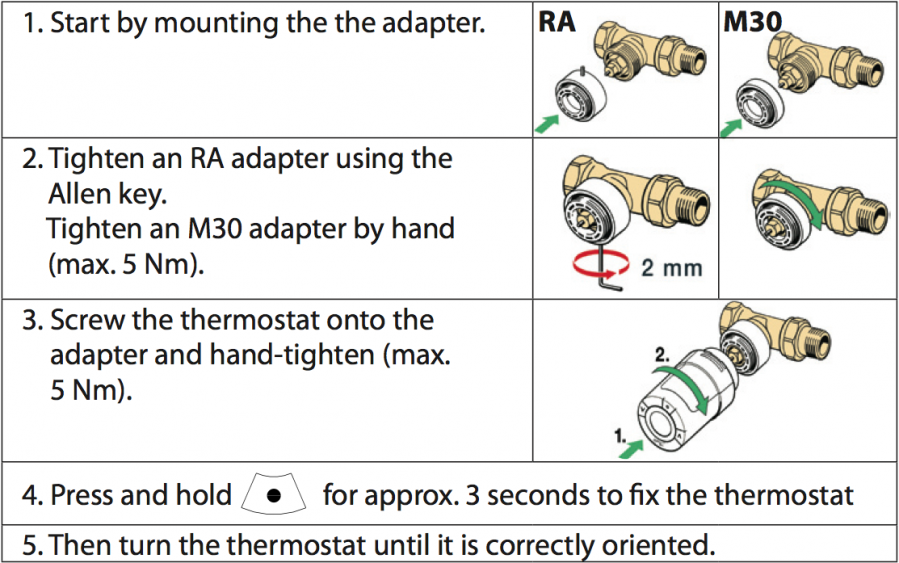
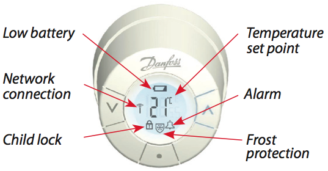

DAN_LIVC_RAK
Firmware Version : 2.51 |
 |
Quick Start
S This device is a Z-Wave Radiator Thermostat. Click on the middle button will confirm inclusion or exclusion and wakeup the device for wireless communication. A long push for 3 seconds on the middle buttons enters and leaves the management mode indicated by a 'M' on the LCD display.
Please refer to the chapters below for detailed information about all aspects of the products usage.
What is Z-Wave?
This device is equipped with wireless communication complying to the Z-Wave standard. Z-Wave is the international standard for wireless communication in smart homes and buildings. It is using the frequency of 868.42 MHz to realize a very stable and secure communication. Each message is reconfirmed (two-way communication) and every mains powered node can act as a repeater for other nodes (meshed network) in case the receiver is not in direct wireless range of the transmitter.
Z-Wave differentiates between Controllers and Slaves. Slaves are either sensors (S) transmitting metered or measured data or actuators (A) capable to execute an action. Controllers are either static mains powered controllers (C) also referred to as gateways or mobile battery operated remote controls (R). This results in a number of possible communication patterns within a Z-Wave network that are partly or completely supported by a specific device.

- Controllers control actuators
- Actuators report change of status back to controller
- Sensors report change of status of measured values to controller
- Sensors directly control actuators
- Actuators control other actuators
- Remote controls send signals to static controllers to trigger scenes or other actions
- Remote controls control other actuators.
There are two different role a controller can have. There is always one single primary controller that is managing the network and including/excluding devices. The controller may have other functions - like control buttons - as well. All other controllers don't manage the network itself but can control other devices. They are called secondary controllers. The image also shows that its not possible to operate a sensor just from a remote control. Sensors only communicate with static controllers.
Product description
Living Connect is a Z-Wave controlled electronic radiator thermostat. It is mounted on wall heating valves and controls them by a motor. The device accepts a setpoint that is either set manually using buttons on the device or wirelessly using Z-Wave. Afterwards, the device will regulate the warm water supply to the wall radiator and compare the detected temperature to ensure, that the temperature in the room is kept at the desired level. A small LCD panel on the device displays the setpoint temperature on request.
The device has an internal scheduler, that allows to define up to 9 setpoints for up to 7 week days. Once programmed, these setpoints will be activated without any further manual or wireless interaction. Beside setting a desired temperature the device will support special heating schemes, such as energy saving and frost protection and intelligent functions such as detection of open windows or a valve training function to ensure that valves are still operational after longer periods.
The living connect can be mounted to valves with standard M30x1.5 connector or RA2000 (Danfoss snap in).
Batteries
The unit is operated by batteries. Use only batteries of correct type. Never mix old and new batteries in the same device. Used batteries contain hazardous substances and should not be disposed of with household waste!
Battery Type: 2 * AA
Installation Guidelines

Adjustment to the radiatorThe device can be adjusted to the room size. Three room sizes are known. The default size is P1. To change the assumed room size press (p) for 3 seconds to enter management mode (M in display). Press (v) until a 'P' is displayed in the LCD display. Hit the (o) button. Now select 1, 2 or 3 using the arrow keys and exit with (o).
RemovalTo remove the thermostat, insert an appropriate tool in the hole in the thermostat's battery chamber (see illustration). Keeping the tool in position, turn the entire thermostat anticlockwise until it is completely unscrewed.
Behavior within the Z-Wave network
I On factory default the device does not belong to any Z-Wave network. The device needs to join an existing wireless network to communicate with the devices of this network. This process is called Inclusion. Devices can also leave a network. This process is called Exclusion. Both processes are initiated by the primary controller of the Z-Wave network. This controller will be turned into exclusion respective inclusion mode. Please refer to your primary controllers manual on how to turn your controller into inclusion or exclusion mode. Only if the primary controller is in inclusion or exclusion mode, this device can join or leave the network. Leaving the network - i.e. being excluded - sets the device back to factory default.
If the device already belongs to a network, follow the exclusion process before including it in your network. Otherwise inclusion of this device will fail. If the controller being included was a primary controller, it has to be reset first.
Click on the middle button will confirm inclusion or exclusion and wakeup the device for wireless communication. A long push for 3 seconds on the middle buttons enters and leaves the management mode indicated by a 'M'.
Operating the device
The Danfoss device is operated by wireless commands from a Z-Wave controller. It is operated in two different modes:
- Direct setting of Temperature Set Point by Controller. (Attention: There may be a delay in execution of a setpoint command due to the wakeup interval of the device. If the setpoint is to be changed at e.g. 16.00 and the wakeup interval is 15 minutes, make sure to send the command latest at 15.45)
- Downloading of a whole weekly schedule into the device that will then regulate the heat independent of the controller. The device is capable holding a complete schedule with up to 9 different setpoints for each individual week day. The device will calculate the best time to start heating up or heating down.
The actual temperature setpoint is shown in the LCD display and can be overwritten by using the arrow keys on the device. This overwriting is temporary and only valid until the next change of the temperature setpoint (either triggered from external wireless command or from the internal downloaded schedule) becomes active.
The device will also recognize an open window (sudden temperature drop within short period of time) and turn down the heat for 30 minutes to save energy.
Local LCD DisplayThe local LCD display gives information about the status of the device

Link TestThe Thermostat allows to check the link quality to the controller device. Press the middle button (o) for 3 seconds until M is displayed. Select 'LI' in display using the arrow keys, then confirm the link test with the middle button. A blinking antenna symbol indicates the link test. If the antenna symbol keeps flashing after about 3 seconds there is a problem with the wireless connection. If the antenna symbol stops flashing, the link quality is sufficient. A successfull link test will also terminate the exception mode described below.
Known Problems in Z-Wave Networks: This device is sleeping and wakes up regularly. When waking up the device needs a wireless connection to the controller to get clock and heating schedule updates if needed. If no wireless connection to the controller can be found the device will enter an exception mode indicated by a flashing bell in conjunction with flashing antenna symbol on the LCD display. To exit this exception mode as soon as possible the device tries to reestablish a wireless connection by applying the so-called 'Lost' procedure defined by Z-Wave with the help of a Static Update Controller (SUC) in the network. In case of success the execption mode is terminated. In case of failure - e.g. because the controller is still shut off - the device will remain in the exception mode and repeats the 'Lost' process. This drains the battery very fast. To avoid this situation make sure the following requirements are made: (a) the thermostat has a stable direct wireless connection to the controller or (b) there is a static controller serving as SUC in the Z-Wave network and there is a valid route between the device and this SUC.
The device applies multiple technologies to extend battery life. It is combining multi commands to a single command and adapt its behavior to the capabilities of the network controller. Make sure to use Danfoss Living connects only with Z-Wave controllers fully implementing all battery life time extention methods recommended by Danfoss. All controllers based on Z-Wave.Me software (e.g. RaZberry) fully support these methods.
When the battery level is low, the alarm bell icon flashes and the display will flash 8 times an hour between 19 and 22 hrs. If the battery goes flat, the system switches automatically to frost protection mode.
Child Protection
The device can be turn into a child protection mode. In this mode all local operation is disabled.
The protection must be enabled/disabled wireless with Z-Wave commands. The protection status is indicated by a little protection shield in the LCD display.
Wakeup Intervals - how to communicate with the device?
W This device is battery operated and turned into deep sleep state most of the time to save battery life time. Communication with the device is limited. In order to communicate with the device, a static controller C is needed in the network. This controller will maintain a mailbox for the battery operated devices and store commands that can not be received during deep sleep state. Without such a controller, communication may become impossible and/or the battery life time is significantly decreased.
This device will wakeup regularly and announce the wakeup state by sending out a so called Wakeup Notification. The controller can then empty the mailbox. Therefore, the device needs to be configured with the desired wakeup interval and the node ID of the controller. If the device was included by a static controller this controller will usually perform all necessary configurations. The wakeup interval is a tradeoff between maximal battery life time and the desired responses of the device.
Click on the middle button will wakeup the device for wireless communication (if not in exception mode).
It is possible to set the node ID to 255 to send wakeup notifications as broadcast. In this mode device takes more time to go to sleep and drains battery faster, but can notify all it's direct neighbors about a wakeup.
Node Information Frame
NI The Node Information Frame is the business card of a Z-Wave device. It contains information about the device type and the technical capabilities. The inclusion and exclusion of the device is confirmed by sending out a Node Information Frame. Beside this it may be needed for certain network operations to send out a Node Information Frame.
Click on the middle button will send out a Node Information Frame (if not in exception mode).
Associations
A Z-Wave devices control other Z-Wave devices. The relationship between one device controlling another device is called association. In order to control a different device, the controlling device needs to maintain a list of devices that will receive controlling commands. These lists are called association groups and they are always related to certain events (e.g. button pressed, sensor triggers, ...). In case the event happens all devices stored in the respective association group will receive a common wireless command.
Association Groups:
| 1 | Target for Wakeup and Override Notifications (max. nodes in group: 1) |
Command Classes
Supported Command Classes- Battery (version 1)
- Clock (version 1)
- Thermostat Setpoint (version 2)
- Wake Up (version 2)
- Version (version 1)
- Climate Control Schedule (version 1)
- Multi Command Encapsulated (version 1)
- Manufacturer Specific (version 1)
- Protection (version 2)
Technical Data
| Battery Type | 2 * AA |
| Explorer Frame Support | No |
| SDK | 4.28 |
| Device Type | Slave with routing capabilities |
| Generic Device Class | Thermostat |
| Specific Device Class | Setpoint Thermostat |
| Routing | No |
| FLiRS | No |
| Firmware Version | 2.51 |
Explanation of Z-Wave specific terms
- Controller — is a Z-Wave device with capabilities to manage the network. Controllers are typically Gateways, Remote Controls or battery operated wall controllers.
- Slave — is a Z-Wave device without capabilities to manage the network. Slaves can be sensors, actuators and even remote controls.
- Primary Controller — is the central organizer of the network. It must be a controller. There can be only one primary controller in a Z-Wave network.
- Inclusion — is the process of bringing new Z-Wave devices into a network.
- Exclusion — is the process of removing Z-Wave devices from the network.
- Association — is a control relationship between a controlling device and a controlled device.
- Wakeup Notification — is a special wireless message issued by a Z-Wave device to annonces that is is able to communicate.
- Node Information Frame — is a special wireless message issued by a Z_Wave device to announce its capabilities and functions.
Disposal Guidelines
The product contains batteries. Please remove the batteries when the device is not used.
Do not dispose of electrical appliances as unsorted municipal waste, use separate collection facilities. Contact your local government for information regarding the collection systems available. If electrical appliances are disposed of in landfills or dumps, hazardous substances can leak into the groundwater and get into the food chain, damaging your health and well-being.